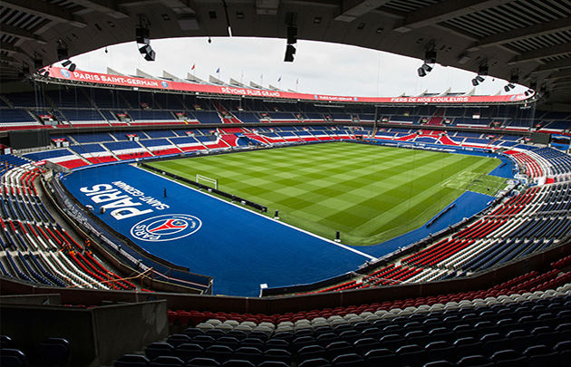

Introduction

Football, or ‘soccer’ as it is known in some parts of the world, including the USA, Canada, Southern Africa, Australia, as well as several parts of Asia, is the most widely played sport in the world.
Football is the most instinctive of all sports, making it easily accessible, to predict on at online sites and sportsbooks, and of course easy to learn by just about anyone.
Apart from this, football is more than just a sport. It teaches children and young adults to work together towards a common goal, something that can be used in every aspect of the individual’s life inside and outside of the game. It teaches discipline and camaraderie.
FUN FACT: Although no one knows the exact time, The earliest versions of football can be traced back more than 3,000 years!.
Know Your Top Clubs!
In England alone, There are more than 140 individual leagues, containing more than 480 divisions. Tens of Millions of Players come together to play the beautiful game. Take a moment here to get to know your 3 biggest teams; Barcelona FC, Paris Saint-Germain, and Manchester City FC, in the 3 Biggest Leagues; Ligue 1, Premier League, and La Liga!
1 / 3
Barcelona
LaLiga
Futbol Club Barcelona, commonly referred to as Barcelona and colloquially known as Barça, is a professional football club based in Barcelona, Spain, that competes in La Liga, the top flight of Spanish football


2 / 3
Manchester City
Premier League
The history of Manchester City Football Club, a professional football club based in Manchester, England. Manchester City have won 28 major honours throughout their history: 7 league titles, 6 FA Cups, 8 League Cups, 6 FA Charity/Community Shields, and 1 European Cup Winners' Cup

3 / 3
Paris Saint-Germain
Ligue-1
Paris Saint-Germain Football Club, commonly referred to as Paris Saint-Germain, Paris, Paris SG or simply PSG is a professional football club based in Paris, France. They compete in Ligue 1, the top division of French football.


❮
❯